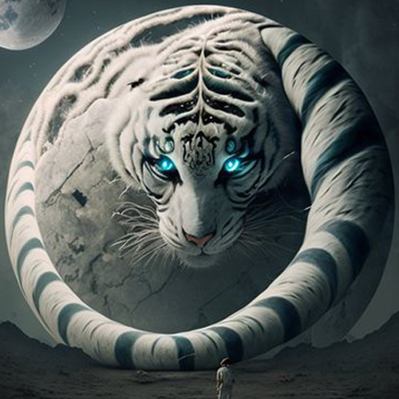
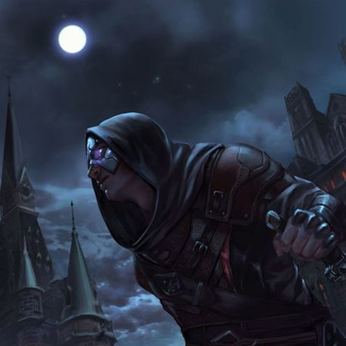
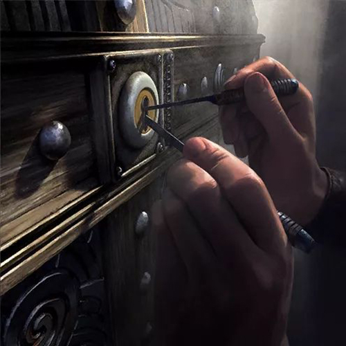

Voltar
Howai, O Tigre Ladino
Howai e um Tigre Branco que após passar por muitas dificuldades em sua infância precisou sobreviver de uma maneira não muito honrosa, porem agora, renegado da Guilda dos Ladrões, busca a glória a qualquer custo.
Identidade
Nome: Howai
Idade: 27 Anos
Altura: 1.80 m
Gênero: Masculino
Classe: Ladino
Raça: Khajiit
Pontos de personagem
Vida: 51 HP
Level: 4
Experiência: 375 / 550
Sanidade: 75%
Personalidade
Mau-Neutro (Egoísta)
Motivaçoes: Glória e Pilas
Inspiraçoes: Família e Wabar
Defeitos: Cleptomaniaco
Objetivo: Construir uma reputação gloriosa como um ladino legendário e construir uma fortuna como
patrimônio.
Exemplos:
Modificador: [-X], [+X]
Bônus Raça: (X)
• FORÇA: 11 [0]
• CONTITUIÇÃO: 10 [0]
• DESTREZA: 17 (1) [+3]
• AGILIZADE: 15 (1) [+2]
• INTELIGÊNCIA: 10 (1) [0]
• CARISMA: 1 (-5)
• Olho Nortuno
{Passiva} (Raça)
Os passos de um Khajiit são extremamente leves, podem realizar pulos sem emitirem nenhum barulho.
• Instinto Ladino
{Passiva}
Continua furtivo após executar alguém no modo furtivo.
Tem chance de aplicar efeito *ASSUSTADO* aos inimigos restantes.
• Flechas Múltiplas Lvl 2
2 Cargas p/ batalha

Atira 3 flechas ao mesmo tempo.
Pode acertar 3 alvos diferentes ou 3 flechas no mesmo alvo.
• Ataque Evasivo Lvl 1
1 Carga p/ batalha

Ataca com uma arma de uma mão.
Após o ataque se esconde, mantendo-se em modo furtivo.
• Arrombamento Lvl 1
2 Cargas p/ dia
Abre qualquer fechadura de nível iniciante.
Historia
Howai foi criado apenas por sua mãe, pois seu pai havia partido para lutar em ajuda a Mitrael na Grande Guerra Leviana, Howai e sua mae viviam próximo a Passagem Golem de Gelo,
apesar de viverem em um lugar muito isolado, as notícias sobre a guerra chegaram e muitos peregrinaram em
direção aonde agora e conhecido como a Terra dos Putrefatos, um lugar que assim como seu pai,
muitos morreram.
Durante sua infância eram praticamente só os dois, Howai e sua mãe. Com ela aprendeu a caçar com arco e a
ser
furtivo.
Aos 16 anos Howai estava fortemente doente, então, não podia sair de casa para caçar, além disso, como
em todo inverno a grande tempestade de neve estava por vir.
Durante a caçada, ela tentou fazer uma travessia arriscada por um lago congelado, pois havia visto um cervo do lado oposto.
O gelo em alguns pontos estava mais fino e durante a travessia se partiu.
Ela caiu na água e cortou a perna em um fragmento de gelo, porem, como ela era muito ágil, conseguiu sair do lago, mas, além de estar sangrando bastante, com muita dor e molhada, estava muito longe de casa para voltar antes da tempestade chegar.
Inevitavelmente não conseguiu se salvar da tempestade, e ficou presa nela.
Após algumas horas, Howai já havia percebido que tinha alguma coisa errada, mas, já era tarde de mais, a tempestade já tinha chegado e seria praticamente impossível encontrá-la em meio a nevasca, apesar destes fatores, tomado por emoção, ele saiu determinado a encontrá-la.
Ele passou horas a fio a procurando, até ver uma silhueta em meio a tempestade, ao se aproximar percebeu que era sua mãe e que estava morrendo de hipotermia, ele ainda não sabia, mas, neste ponto já não havia mais nada a ser feito.
Howai ao ver esta cena, entrou em choque e já não sabia oque fazer, com muita sorte sua mãe ainda tinha forças para falar algumas palavras, ela expressou todo o seu amor por Howai e disse que se tentasse salva-lá em meio a essa tempestade, ele também iria morrer.
Completamente abalado e chorando muito, Howai conseguiu entender a situação, disse que também a amava e começou a tentar voltar pra casa.
Ele sabia que não tinha mais nada que o ligasse àquela casa, mas não havia outro lugar para ir, então retornou para la.
Foram 3 dias e 3 noites intensos, mas ele sobreviveu.
Após isso resolveu tentar continuar a morar naquela casa e para sobreviver, caçava sua própria comida, mas muitas vezes não conseguia alimento, chegou a passar fome, realmente para Howai foram tempos difíceis.
Depois de alguns meses ele não estava mais aguentando ficar em um lugar que o lembrava constantemente de seu passado, portanto, decidiu abandonar sua casa e tentar uma vida de andarilho, mas as coisas não foram nada fáceis para ele.
Em incontáveis vezes ele passou por dificuldades, mas para sobreviver foi obrigado a roubar e com o tempo ficou ótimo nisso, depois de 4 anos sozinho acabou roubando as pessoas erradas, uma guilda de ladrões, que ao invés de se irritar com ele, se impressionou muito com suas habilidades e o recrutou.
Após isso ficou preso 6 anos nessa guilda, porem, aprendeu muito com eles, mas, já estava cansado daquilo tudo e queria ter uma vida normal agora.
Portanto, decidiu por sair da guilda, como já tinha a confiança de todos nela, apesar de muitos serem contra a ideia, não foi tao difícil sair, alguns de companheiros da alta cúpula entenderam perfeitamente seu lado e permitiram sua saída, com o acordo de que nunca mais retornaria para a Guilda dos Ladrões.
Entao foi tentar a sorte em Razavar, onde ele esta agora.
Não me importo o quão forte você é, se eu te enganar, eu ganhei.
Mais vale uma carteira na minha mão do que no bolso de alguém.